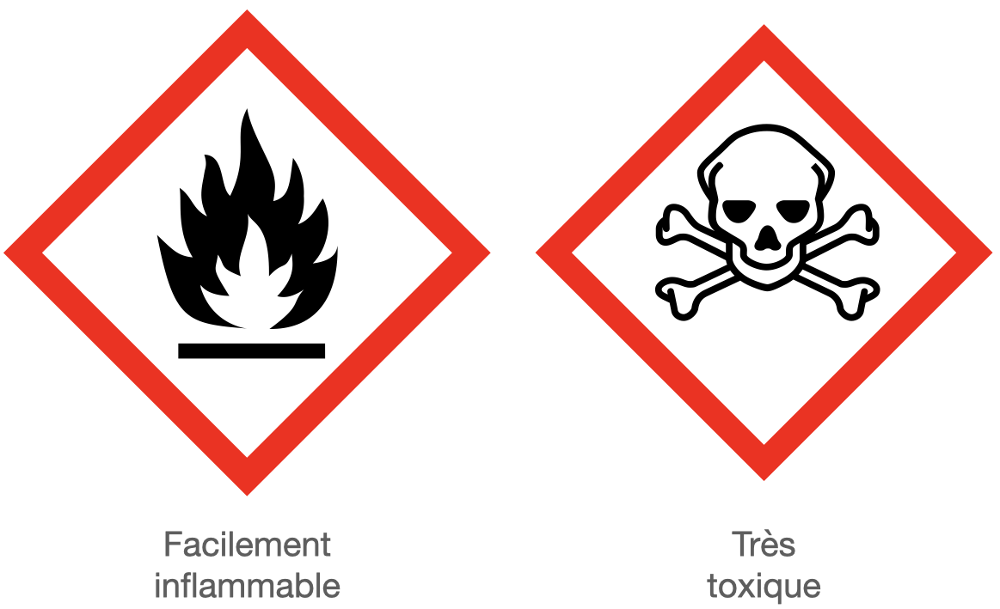
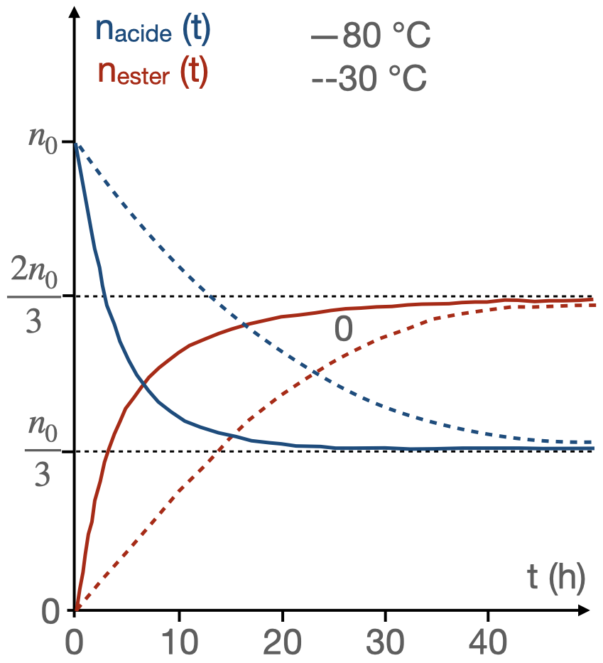

L’objectif de ce document est de présenter à partir de l’exemple de l’équilibre d’estérification-hydrolyse des méthodes généralisables que le chimiste utilise au quotidien pour répondre aux questions :
- Comment accélérer une transformation lente ?
- Comment augmenter le rendement d’une transformation limitée ?
Équilibre estérification - hydrolyse
Synthèse d’un ester : estérification
L’éthanoate de benzyle, un ester à odeur de jasmin, peut être synthétisé par réaction de l’acide éthanoïque (ou acétique) $\ce{CH3-CO2H}$ avec l’alcool benzylique $\ce{C6H5-CH2-OH}$, en présence de traces d’acide sulfurique, Sa formation s’accompagne de celle d’eau.
- Écrire l’équation de la réaction de synthèse de l’éthanoate de benzyle à l’aide de formules semi-développées.
- Écrire l’équation de la réaction de synthèse de l’éthanoate de benzyle à l’aide de formules topologiques.
- Quel est le rôle de l’acide sulfurique ?
Solution
- $ \ce{CH3-CO2H (liq) + C6H5-CH2-OH (liq) -> CH3-CO2-H2C-C6H5 (liq) + H2O (liq)} $
Noter qu’il faut écrire $\ce{(liq)}$ et pas $\ce{(aq)}$ car on ne travaille pas en solution aqueuse. Les réactifs et produits sont purs. - À venir.
- L’acide sulfurique joue le rôle de catalyseur.
Hydrolyse d’un ester
Chauffons à reflux pendant environ trente minutes un mélange constitué de $\pu{10 mL}$ d’éthanoate de benzyle $\ce{CH3-CO2-CH2-C6H5}$, de $\pu{40 mL}$ d’eau et d’une dizaine de gouttes d’acide sulfurique. Il se forme de l’alcool benzylique et de l’acide éthanoïque.
- Écrire l’équation de la réaction entre l’éthanoate de benzyle et l’eau.
- Quel est le rôle de l’acide sulfurique ?
- Pourquoi la réaction porte-t-elle le nom d’« hydrolyse » ?
Solution
- $\ce{CH3-CO2-CH2-C6H5 (liq) + H2O (liq) -> CH3-CO2H (liq) + C6H5-CH2-OH (liq)} $
- L’acide sulfurique joue le rôle de catalyseur.
- « Hydrolyse signifie « coupure par l’eau ». Il s’agit d’une réaction dont l’un des réactifs est l’eau.
Équilibre estérification - hydrolyse
- À partir des deux exemples ci-dessus, expliquer pourquoi toute transformation s’appuyant sur une réaction d’estérification ou sur une réaction d’hydrolyse ne peut pas être totale.
- Écrire correctement l’équation de la réaction d’estérification entre l’acide acétique et l’alcool benzylique.
Solution
- La réaction d’estérification conduit à la formation d’un ester et d’eau.
- La réaction d’hydrolyse est une réaction entre un ester et l’eau. Elle conduit à la formation d’un acide carboxylique et d’un alcool. On voit que ces deux réactions conduisent à la formation de produits capables de réagir entre eux. Les transformations modélisées par ces réactions ne peuvent donc pas être totales.
- $ \ce{CH3-CO2H(liq) + C6H5-CH2-OH(liq) <=> CH3-CO2-H2C-C6H5(liq) + H2O(liq)} $
Rendement d’une transformation chimique
Dans le cas de l’estérification, $$ \eta = \dfrac{n(\text{ester})}{n_{\text{max}}(\text{ester})} = \dfrac{n(\text{ester})}{n(\text{réactif limitant})} $$
On réalise l’hydrolyse, en milieu acide et en présence d’un excès d’eau, d’une quantité $n_i(\text{ester}) = \pu{0,120 mol}$ d’un ester à odeur de muguet, l’éthanoate de 3-phénylpropyle, de formule : $$\ce{CH3-CO2-CH2-CH2-CH2-C6H5}$$
- Donner la formule et le nom des produits obtenus.
- On recueille, après séparation des produits, une masse $m_f = \pu{4,56 g}$ d’alcool. En déduire le rendement de cette hydrolyse.
Solution
- L’acide obtenu est l’acide éthanoïque $\ce{CH3-CO2H}$. L’alcool obtenu est le 3-phénylpropan-1-ol $\ce{HO-CH2-CH2-CH2-C6H5}$.
- La stœchiométrie de la réaction est telle qu’il se forme autant d’acide que d’alcool. Le rendement s’écrit donc :
$$
\eta = \dfrac{n_f(\text{alcool})}{n_i(\text{ester})} = \dfrac{m_f(\text{alcool})}{n_i(\text{ester})\cdot M(\text{alcool})}
$$
A.N. $\eta = \dfrac{\pu{4,56 g}}{\pu{0,120 mol} \times \pu{136,0 g.mol-1}} = \pu{0,28}$
Le rendement vaut 28 %.
Le benzoate de méthyle, à l’odeur d’œillet, est utilisé en parfumerie. Pour le synthétiser, on chauffe à reflux, sous la hotte pendant environ une heure, $\pu{12,2 g}$ d’acide benzoïque $\ce{C6H5-CO2H}$, $\pu{40 mL}$ de méthanol et $\pu{3 mL}$ d’acide sulfurique.
Après refroidissement du mélange réactionnel, on verse celui-ci dans une ampoule à décanter contenant $\pu{50 mL}$ de solution saturée de chlorure de sodium. Après séparation des deux phases, lavage, puis séchage de la phase organique, on récupère par distillation une masse $m_f = \pu{10,2 g}$ de benzoate de méthyle.
Données
| Composé | acide benzoïque | méthanol | benzoate de méthyle |
|---|---|---|---|
| $M(\pu{g.mol-1})$ | 122 | 32 | 136 |
| $\mu (\pu{g.cm-3})$ | 1,321 | 0,791 | 1,089 |
Pictogrammes présents sur l’étiquette d’un flacon de méthanol : 
- Écrire l’équation de cette estérification.
- Pourquoi chauffe-t-on à reflux ?
- Pourquoi effectue-t-on cette synthèse sous la hotte?
- Déterminer le rendement de cette synthèse.
Solution
- Lacide benzoïque réagit avec le méthanol selon l’équation : $$ \ce{C6H5-CO2H + CH3-OH <=> C6H5-CO2-CH3 + H2O} $$
- En chauffant, on accélère la réaction. C’est à l’ébullition, température maximale que peut atteindre le mélange, que la vitesse de la réaction est la plus élevée. Le condenseur à eau du montage à reflux refroidit les vapeurs qui s’élèvent et les condense. Le liquide alors obtenu retourne dans le ballon, ce qui permet d’éviter la perte de réactifs et de produits par évaporation.
- Le méthanol est un liquide toxique dont il convient d’éviter de respirer les vapeurs ; d’où la nécessité d’effectuer cette synthèse sous la hotte. Inflammable, on devra le manipuler en l’absence de toute flamme.
- La quantité d’acide utilisé pour cette synthèse est : $$ n_i(\text{acide}) = \dfrac{m_i (\text{acide})}{M(\text{acide})} = \dfrac{\pu{12,2 g}}{\pu{122,0 g.mol-1}} = \pu{0,100 mol} $$
- La quantité d’alcool utilisé est :
$$
n_i(\text{alcool}) = \dfrac{m_i (\text{alcool})}{M(\text{alcool})} = \dfrac{V_i (\text{alcool}) \cdot \mu (\text{alcool})}{M(\text{alcool})}
$$
A.N. $n_i(\text{alcool}) = \dfrac{\pu{40 mL} \times \pu{0,791 g.mL-1}}{ \pu{32 g.mol-1} } = \pu{0,99 mol}$
$$
\eta = \dfrac{n_f(\text{ester})}{n_i(\text{acide})} = \dfrac{m_f(\text{ester})}{n_i(\text{acide})\cdot M(\text{ester})}
$$
A.N. $\eta = \dfrac{\pu{10,2 g}}{\pu{0,100 mol})\times M(\pu{136 g.mol-1})} = \pu{0,75}$.
Le rendement vaut 75 %.
Synthèse
-
Un ester peut être obtenu par la réaction d’un acide $\ce{R-CO2-H}$ avec un alcool $\ce{R’-OH}$ suivant l’équation : $$ \ce{R-CO2-H (liq) + R’-OH (liq) <=> R-CO2-R’ (liq) + H2O (liq)} $$ Les ions H+ catalysent cette synthèse.
-
L’eau hydrolyse l’ester $\ce{R-CO2-R’}$ pour donner l’acide carboxylique $\ce{R-CO2-H}$ et l’alcool $\ce{R’-OH}$ correspondants suivant l’équation : $$ \ce{R-CO2-R’ (liq) + H2O (liq) <=> R-CO2-H (liq) + R’-OH (liq)} $$ Les ions H+ catalysent cette synthèse.
-
Les réactions d’estérification et d’hydrolyse sont inverses l’une de l’autre et ont lieu simultanément. Elles se limitent l’une l’autre et conduisent à un état d’équilibre chimique.
Cet état est atteint lorsque la vitesse de formation de l’ester par la réaction d’estérification est exactement égale à sa vitesse de disparition par hydrolyse. -
Toute transformation modélisée par une réaction d’estérification ou d’hydrolyse est lente et limitée.
-
L’équilibre d’estérification-hydrolyse est caractérisé par la constante d’équilibre $K$ telle que, pour l’équation écrite dans le send de l’estérification : $$ K = \dfrac{[\text{ester}]\, [\text{eau}]}{[\text{acide}]\, [\text{alcool}]} $$
Le rendement d’estérification dépend très peu de la nature de l’acide carboxylique utilisé.
Il dépend par contre beaucoup de la classe de l’alcool utilisé.
Pour des mélanges équimolaires en acide carboxylique et en alcool :
- Le rendement est voisin de 67 % si l’alcool est primaire ;
- Le rendement est compris entre 56 % et 65 % si l’alcool est secondaire ;
- Le rendement est inférieur à 10 % si l’alcool est tertiaire.
Contrôle cinétique : comment modifier la vitesse de formation d’un produit
Influence de la température
À l’aide d’enceintes thermostatées, il est possible d’étudier l’influence de la température sur les réactions d’estérification ou d’hydrolyse d’esters, donc sur l’état d’équilibre. On peut tracer $n_{\text{acide}} (t)$ (ou $n_{\text{alcool}} (t)$) et $n_{\text{ester}} (t)$ (ou $n_{\text{eau}} (t)$) pour diverses valeurs de la température (80 °C et 30 °C ci-dessous).
- Le diagramme ci-dessus correspond-il au déroulement d’une estérification ou d’une hydrolyse ?
- Que nous enseigne le graphe ci-dessus ?
- Si on suppose le mélange initial équimolaire, quel est le rendement de la transformation modélisée par cette réaction, à 80 °C ?
Solution
- Il s’agit d’une estérification puisque la quantité d’acide diminue. Il s’agit donc d’un réactif.
- Deux conclusions se dégagent de ce graphe :
- Une élévation de température permet d’atteindre plus rapidement l’état d’équilibre.
- La composition à l’équilibre de systèmes résultant de l’évolution de mélanges initiaux identiques est indépendante de la température.
- Puisque le mélange initial était équimolaire, l’acide est limitant et $\eta = \pu{0,67}$.
- Les réactions d’estérification et d’hydrolyse sont athermiques.
- Le chauffage n’a aucune influence sur l’état final de l’équilibre d’estérification-hydrolyse, donc sur le rendement.
Influence du catalyseur
En réalisant les réactions d’estérification et d’hydrolyse en présence ou en absence d’ions hydronium $\ce{H^+}$, il est possible d’étudier le rôle du catalyseur sur la composition du mélange réactionnel.
L’influence de la quantité de catalyseur utilisé peut aussi être étudiée.
- Que peut-on conclure ?
Solution
Deux conclusions peuvent à nouveau se dégager de ces graphes :
- L’utilisation d’un catalyseur ne modifie pas l’état d’équilibre final, car il catalyse de la même façon les deux réactions inverses l’une de l’autre : l’estérification et l’hydrolyse.
- Le seul rôle du catalyseur est de permettre d’atteindre plus vite l’état d’équilibre. L’état d’équilibre est d’autant plus vite atteint que la concentration du catalyseur est plus élevée.
Il permet d’atteindre plus rapidement l’état d’équilibre.
Contrôle thermodynamique : comment améliorer le rendement d’une transformation chimique ?
Loi modératrice
Les facteurs d’équilibre
On considère un système chimique constitué d’acide, d’alcool, d’ester et d’eau à l’état d’équilibre.
Si on fait varier les concentrations des différents constituants du mélange, par exemple en rajoutant de l’eau. L’expérience montre que le système évolue alors vers un nouvel état d’équilibre.
- Pour un système en phase liquide, les paramètres pouvant faire évoluer l’état d’équilibre du système sont les concentrations des différents constituants et la température. On les appelle les facteurs d’équilibre.
- La pression est aussi un facteur d’équilibre, mais essentiellement en phase gazeuse.
Évolution du système
Comment le système chimique réagit-il à une modification de l’un des facteurs d’équilibre ? La loi de modération permet de le prévoir qualitativement :
Influence de l’excès d’un des réactifs
- Écrire l’expression du quotient de réaction d’une réaction d’estérification alors que l’état d’équilibre de la transformation est atteint.
- On ajoute alors de l’acide (ou de l’alcool) dans le système. Comment évolue le quotient de réaction ?
- Appliquer le critère d’évolution et indiquer l’évolution du système.
- La loi de modération est-elle appliquée ?
Solution
- Si le système est à l’équilibre : $$ K = Q_{r,eq} = \dfrac{n_{eq}(\text{ester})\, n_{eq}(\text{eau})}{n_{eq}(\text{acide})\, n_{eq}(\text{alcool})} $$
- Si à ce système, on ajoute de l’alcool, le quotient de réaction diminue, $Q_r < Q_{r,eq}$.
- Puisque $Q_r < Q_{r,eq}=K$, le critère d’évolution nous apprend que le système doit évoluer de façon à ce que la valeur du quotient de réaction augmente.
Le système consomme les réactifs et évolue dans le sens direct. - La loi de modération est appliquée puisqu’en réponse à un ajout d’un réactif le système consomme les réactifs.
- Si, dans l’état initial d’une transformation modélisée par une réaction d’estérification, on utilise un excès d’acide ou d’alcool au lieu d’un mélange stœchiométrique — équimolaire donc ici (On choisit en général le moins coûteux), la loi de modération indique que l’état final de la transformation est déplacé (par rapport à celui correspondant à un mélange stœchiométrique) dans le sens de la consommation du réactif en excès (donc de l’estérification).
- Le rendement étant calculé par rapport au réactif limitant, dont la quantité de matière ne varie pas, augmente donc puisque la quantité de matière d’ester produit est plus grande.
Influence de l’élimination de l’un des produits
On peut cependant aussi voir, en appliquant le même critère, que diminuer la quantité d’eau ou d’ester présents dans le système à l’équilibre conduit au même résultat.
(On peut aussi considérer que l’eau et l’ester sont les réactifs de la réaction qui limite l’estérification, leur élimination ne peut que favoriser le rendement de cette dernière)
Exercices
On chauffe à reflux un mélange constitué d’une mole d’acide butanoïque, d’une mole d’éthanol et de quatre gouttes d’acide sulfurique. Le volume initial $V = \pu{151 mL}$ est considéré comme constant durant l’expérience.
Toutes les 10 minutes, on prélève un volume $V_a = \pu{2 mL}$ du mélange et on le plonge dans l’eau glacée. On dose alors tout l’acide restant par une solution de soude de concentration $C_b = \pu{2 mol·L-1}$ en présence de phénolphtaléine. On note $V_{b,E}$ le volume de soude versé à l’équivalence. Un premier dosage à $t =0$ donne $V_{b,0} = \pu{6,7 mL}$.
- Écrire l’équation de la réaction et nommer l’ester formé.
- Pourquoi le prélèvement est-il plongé dans de l’eau glacée ? Comment s’appelle cette opération ?
- Écrire l’équation de la réaction support du titrage.
- Exprimer, en fonction de $V$, $V_a$, $V_{b,0}$, $V_{b,E}$ et $C_b$ la quantité d’ester formé à l’instant $t$ du prélèvement.
- Donnée
- pour $t = \pu{10 min}$, $V_b = \pu{3,4 mL}$.
Solution
- $\ce{CH3-CH2-CH2-CO2H (liq) + CH3-CH2-OH (liq) <=> CH3-CH2-CH2-CO2-CH2-CH3 (liq) + H2O} (liq)$
L’ester se nomme le butanoate d’éthyle. - On plonge le prélèvement dans de l’eau glacée de façon à diminuer très fortement la vitesse de réaction ; on le « fige ». Cette opération se nomme une trempe.
- $\ce{CH3-CH2-CH2-CO2H (aq) + OH^- (aq) -> CH3-CH2-CH2-CO2^- (aq) + H2O}$
- Étape 1.
Un tableau d’avancement pour le titrage du prélèvement, à la date $t$, nous apprend que $n_{\text{acide}}(t) - x_E (t) = 0$ et $n_{\text{base versée}}(t) - x_E (t) = 0$. Donc $$n_{\text{acide}}(t) = n_{\text{base versée}}(t) = C_b \cdot V_{b,E} (t)$$ Comme $n_{\text{acide}}(t) = n_{\text{acide}}(0) - n_{\text{acide}}(\text{qui a réagi à t})$, $$n_{\text{acide}}(0) - n_{\text{acide}}(\text{qui a réagi à t}) = C_b \cdot V_{b,E} (t)$$ ou $$n_{\text{acide}}(\text{qui a réagi à t}) = n_{\text{acide}}(0) - C_b \cdot V_{b,E} (t)$$ On peut déterminer $n_{\text{acide}}(0)$ grâce au premier titrage (à la date $t=0$) : $$n_{\text{acide}}(0) = C_b \cdot V_{b,0}$$ Finalement $$n_{\text{acide}}(\text{qui a réagi à t}) = C_b \cdot V_{b,0} - C_b \cdot V_{b,E} (t) = C_b\, \left( V_{b,0} - V_{b,E} (t) \right)$$ - Étape 2
Un tableau d’avancement pour l’estérification, à la date $t$, nous apprend que $$n_{\text{ester}}(\text{qui s’est formé à t}) = n_{\text{acide}}(\text{qui a réagi à t})$$
Finalement, pour le prélèvement,
$$n_{\text{ester}}(\text{qui s’est formé à t}) = C_b\, \left( V_{b,0} - V_{b,E} (t) \right)$$
Cette quantité de matière n’est cependant pas toute la quantité de matière formée puisque le prélèvement ne correspond qu’à la fraction $\dfrac{V_a}{V}$ du mélange.
Pour tout le mélange,
$$n_{\text{ester}}(\text{qui s’est formé à t}) = C_b\, \left( V_{b,0} - V_{b,E} (t) \right) \, \dfrac{V}{V_a}$$
A.N. $n_{\text{ester}}(\text{qui s’est formé à t}) = \pu{2 mol·L-1} \times \left(\pu{6,7e-3 L} - \pu{3,4e-3 L} \right) \times \dfrac{\pu{151 mL}}{\pu{2 mL}} = \pu{0,50 mol}$
On introduit dans un ballon $\pu{0,200 mol}$ d’acide éthanoïque, $\pu{0,500 mol}$ d’éthanol et 4 gouttes d’acide sulfurique concentré. On chauffe le mélange à reflux pendant une heure.
Après refroidissement, on dose les acides présents par de la soude à $C_b = \pu{1,5 mol.L-1}$. À l’équivalence, $V_b = \pu{18,7 mL}$. Un dosage préalable montre que 4 gouttes d’acide sulfurique concentré sont neutralisées par $V’_b = \pu{2,7 mL}$ de solution de soude.
- Quel est le nom de l’ester formé lors de cette expérience ?
- Le mélange initial est-il stœchiométrique ?
- Quel rendement est attendu pour un mélange stœchiométrique dans les conditions de l’expérience (information un peu plus haut dans ce document) ?
- Établir la composition du mélange au bout d’une heure.
- Calculer le rendement de cette estérification. Conclusion ?
Solution
- L’ester formé est l’éthanoate d’éthyle.
- Le mélange n’est pas stœchiométrique puisque tous les coefficients sont égaux à un dans l’équation de la réaction et que les quantités initiales des réactifs ne sont pas égales.
- L’alcool étant primaire, on attend un rendement voisin de 67 %.
- Le raisonnement détaillé est semblable à celui de l’exercice précédent.
L’acide sulfurique étant un catalyseur, il n’est pas consommé. Par conséquent, le volume de base ayant servi à neutraliser l’acide éthanoïque n’est que de $(V_b - V’_b)$. La quantité d’acide éthanoïque restant est donc, après réaction : $$n_{\text{acide}} = C_b \cdot (V_b - V’_b)$$
A.N. $n_{\text{acide}} = \pu{1,5 mol.L-1} \times (\pu{18,7e-3 L} - \pu{2,7 mL}) = \pu{2,4e-2 mol}$.
L’avancement final de la réaction d’estérification a pour valeur : $$x_f = n_{\text{acide}}(\text{qui a réagi à t}) = n_{\text{acide}}(0) - n_{\text{acide}}$$
A.N. $x_f = \pu{0,200 mol} - \pu{0,024 mol} = \pu{0,176 mol}$.
L’état final a pour composition
| acide | alcool | ester | eau | |
|---|---|---|---|---|
| État initial | 0,200 | 0,500 | 0 | 0 |
| État final | 0,024 | 0,324 | 0,176 | 0,176 |
- $$\eta = \dfrac{n(\text{ester})}{n_i(\text{acide})}$$
A.N. $\eta = \dfrac{\pu{0,176 mol}}{\pu{0,200 mol}} = \pu{0,88} > \pu{0,67}$
Le rendement vaut donc 88 %. L’introduction de l’alcool en excès a bien amélioré le rendement de l’estérification.
Analyse élémentaire d’un ester
Un composé organique de formule brute $\ce{C_nH_{2n}O2}$ contient 27,6 % d’oxygène en masse.
- Montrer que la molécule correspondant à ce composé comporte 6 atomes de carbone. Calculer sa masse molaire $M$.
Ce composé est un ester naturel possédant une odeur agréable. On le note $E$. Par hydrolyse de $E$, on obtient deux corps désignés par $A$ et $B$.
- Quelles sont les fonctions chimiques de ces deux corps ?
- Parmi les termes suivants, indiquer ceux qui vous paraissent convenir pour caractériser une réaction d’hydrolyse : complète, athermique, totale, exothermique, limitée, aboutissant à un équilibre chimique.
Étude du composé $A$
- Sa formule brute est $\ce{C2H4O2}$. Quelques gouttes de bleu de bromothymol additionnées de $A$ donnent une solution de couleur jaune. Quels sont la formule semi-développée et le nom du composé $A$ ?
Étude du composé $B$
- Quelle est la formule brute de la molécule correspondant à $B$ ?
Pour préciser la structure de $B$, on effectue une oxydation ménagée qui conduit à la formation d’un composé $C$. Puis on soumet $C$ aux tests suivants :
- Premier test : une solution de $C$ additionnée de DNPH conduit à la formation d’un précipité de couleur jaune ;
- Deuxième test : une solution de $C$, additionnée de liqueur de Fehling et chauffée, ne provoque aucun changement de coloration de la liqueur.
- Déduire de ces expériences la formule semi-développée et le nom la molécule correspondant au corps $B$. Justifier la réponse.
Données
- Le bleu de bromothymol est de couleur bleue pour des valeurs de pH supérieures à 7,6 et de couleur jaune pour des valeurs de pH inférieures à 6.
- La réaction de Fehling est une réaction chimique qui sert couramment à caractériser des aldéhydes par leur oxydation par des ions cuivre II.
- La 2,4-dinitrophénylhydrazine (ou 2,4-DNPH ou réactif de Brady) est utilisée comme test caractéristique du groupe carbonyle.